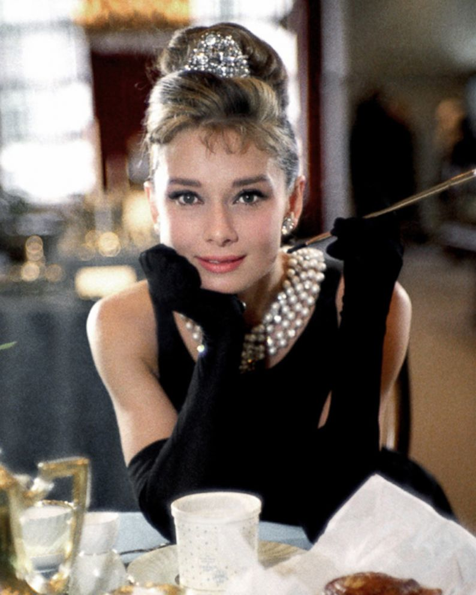
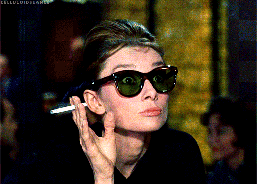

| Сюжет | Мое мнение | |
|---|---|---|
|  | Столица сильных мира сего и уютное гнездышко
очаровательной Холли Голайтли. Кто-то назовет ее девицей по вызову,
кто-то - авантюристкой.
Одни подумают, что она хитра как лисица. Другие решат, что глупа как пробка. Холли это безразлично. Она наслаждается жизнью, меняет наряды и ищет богатого жениха. Но однажды этажом выше появляется симпатичный молодой человек... |
Отдельный лайк заслуживает Одри Хепберн :)
Хочу отметить романтичную атмосферу фильма, которая нежно
обволакивает и гипнотизирует и вот уже даже нелогичный бред
кажется очаровательным.  |